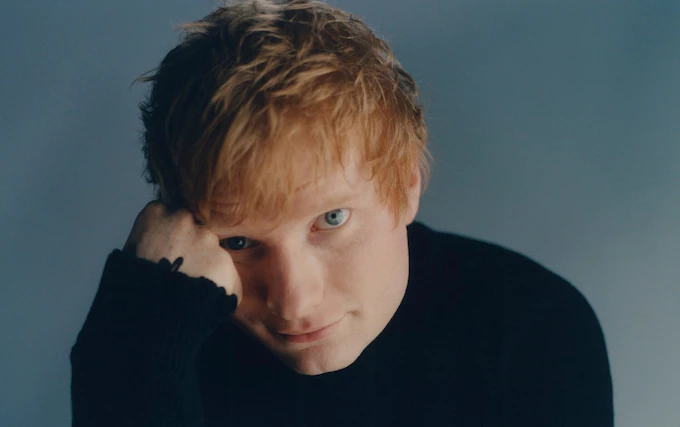
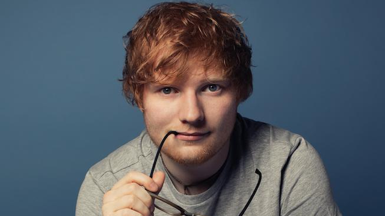

Edward Christopher Sheeran MBE (born 17 February 1991) is an English singer-songwriter. Born in Halifax, West Yorkshire and raised in Framlingham, Suffolk, he began writing songs around the age of eleven. In early 2011, Sheeran independently released the extended play, No. 5 Collaborations Project. He signed with Asylum Records the same year. Sheeran's debut album, + (pronounced "plus"), was released in September 2011 and topped the UK Albums Chart. It contained his first hit single "The A Team". In 2012, Sheeran won the Brit Awards for Best British Male Solo Artist and British Breakthrough Act. Sheeran's second studio album, × (pronounced "multiply"), topped charts around the world upon its release in June 2014. It was named the second-best-selling album worldwide of 2015. In the same year, × won Album of the Year at the 2015 Brit Awards, and he received the Ivor Novello Award for Songwriter of the Year from the British Academy of Songwriters, Composers and Authors. A single from ×, "Thinking Out Loud", earned him the 2016 Grammy Awards for Song of the Year and Best Pop Solo Performance. Sheeran's third album, ÷ (pronounced "divide"), was released in March 2017, and was the best-selling album worldwide of 2017. The first two singles from the album, "Shape of You" and "Castle on the Hill", broke records in a number of countries by debuting in the top two positions of the charts. He also became the first artist to have two songs debut in the US top 10 in the same week. By March 2017, Sheeran had accumulated ten top 10 singles from ÷ on the UK Singles Chart, breaking the record for most top 10 UK singles from one album. His fourth single from ÷, "Perfect", reached number one in the US, Australia and the UK, where it became the Christmas number one in 2017. The world's best-selling artist of 2017, he was named the Global Recording Artist of the Year. Released in 2019, his fourth studio album No.6 Collaborations Project debuted at number one in most major markets, and spawned three UK number one singles, "I Don't Care", "Beautiful People" and "Take Me Back to London". His fifth studio album, = (pronounced "equals"), topped the charts in most major markets in 2021. Sheeran has sold more than 150 million records worldwide, making him one of the world's best-selling music artists.[2] He has 101 million RIAA-certified units in the US,[3] and two of his albums are in the list of the best-selling albums in UK chart history. In December 2019, the Official Charts Company named him artist of the decade, with the most combined success in the UK album and singles charts in the 2010s.[4] Globally, Spotify named him the second most streamed artist of the decade.[4] Beginning in March 2017, his ÷ Tour became the highest-grossing of all time in August 2019. An alumnus of the National Youth Theatre in London, Sheeran's acting roles include appearing in the 2019 film Yesterday.
Who Is Ed Sheeran?
Ed Sheeran is a singer/songwriter who began playing guitar at a young age and soon after started writing his own songs. When he was just a teenager, he moved to London to pursue his music, and his outpouring of creativity added up to several early EPs and hundreds of live shows. Drawing attention for his online performances, Sheeran hit No. 1 on the iTunes chart before he ever signed with a record label. Since signing with Atlantic, Sheeran has sold millions of records and won Grammys for hits like "Thinking Out Loud" and "Shape of You," as well as his 2018 album

Early Years and Career in London
Ed Sheeran was born on February 17, 1991, in Halifax, West Yorkshire, in the United Kingdom. When he was young, he began playing guitar, showing early promise as a musical talent. When he was 11, Sheeran met singer-songwriter Damien Rice backstage at one of Rice’s shows, and the young musician found added inspiration. As the story goes, Rice told Sheeran to write his own music, and Sheeran set out the next day to do just that. It wasn’t long before Sheeran was recording CDs and selling them, and he soon put together his first official EP, The Orange Room. With that accomplishment and his abiding ambition driving him, at only 14 years of age, Sheeran headed to London for the summer. Thinking he could find gigs in the big city, Sheeran left home with his guitar and a backpack full of clothes, and his musical career took flight. Once in London, Sheeran got busy recording and playing the local singer/songwriter circuit and quickly released two albums: a self-titled record in 2006 and Want Some? in 2007. He also began opening for more established acts, such as Nizlopi, the Noisettes and Jay Sean, and released another EP, You Need Me, in 2009, a year that found Sheeran playing more than 300 live shows. It wasn’t until 2010 that Sheeran made the leap to the next level in his career, and it came via online media, a route Sheeran had learned to use with great effectiveness. When a video he posted online got the attention of Example, a rapper, Sheeran was asked to go on the road with him as his opening act. This led to an even larger online fan base and inspiration for many more songs, which ended up filling three new EPs, all in 2010.

Albums and Songs
When Sheeran headed to the United States in 2010, he found a new fan in Jamie Foxx, who asked Sheeran to appear on his Sirius radio show. Soon after, in January 2011, Sheeran released yet another EP, his last as an independent artist. Without any promotion, the record reached No. 2 on the iTunes chart, and he signed on with Atlantic Records that same month. '+' (Plus) With Atlantic, Sheeran released his major debut studio album, +. An instant hit, the album sold more than a million copies in the United Kingdom in the first six months alone. Sheeran began co-writing songs with bigger artists, such as One Direction and Taylor Swift, and supported Swift on her 2013 arena tour. 'I See Fire' and 'x' (Multiply) On a roll, Sheeran’s next success would come when his song "I See Fire" was featured in the movie The Hobbit: The Desolation of Smaug, and in June 2014, his next album, x, appeared, debuting at No. 1 in the United States and the United Kingdom. The project featured three Top 10 singles — "Don't," "Photograph" and "Thinking Out Loud" — with the latter winning the Grammy for Song of the Year and Best Pop Solo Performance in 2016. '÷' (Divide) In 2016, Sheeran took a hiatus to work on his third studio album, ÷. In January 2017, he released two singles from the album, "Shape of You" and "Castle on the Hill," which debuted at No. 1 and No. 6, respectively, on the Billboard Hot 100. Sheeran subsequently released ÷ in March 2017, and announced a world tour. His new album broke a Spotify record for first-day album streams with 56.7 million listens in 24 hours. Scroll to Continue READ NEXT NEW YORK - DECEMBER 30: Figure Skater Brian Boitano is seen at the Rink at Rockefeller Center on December 30, 2009 in New York City. (Photo by Henry S. Dziekan III/Getty Images) Brian Boitano (1963–) CULVER CITY, CA - FEBRUARY 02: Actor Bob Odenkirk arrives for the Premiere Of AMC's "Better Call Saul" Season 2 held at ArcLight Cinemas on February 2, 2016 in Culver City, California. (Photo by Albert L. Ortega/Getty Images) Bob Odenkirk LONDON, UNITED KINGDOM - OCTOBER 16: British Foreign Secretary Boris Johnson waits for the arrival of US Secretary of State John Kerry for a meeting on the situation in Syria at Lancaster House on October 16, 2016 in London, England. (Photo by Justin Tallis - WPA Pool /Getty Images) Boris Johnson (1964–) 'Perfect Duet' In late 2017, Sheeran delivered another hit with the love song "Perfect," also released as a joint effort with Beyoncé, titled "Perfect Duet." The original version hit No. 1 on the Billboard Pop Songs and Adult Pop Songs charts in mid-January 2018. Later that month, Sheeran added to his Grammy haul by winning Best Pop Solo Performance for "Shape of You" and Best Pop Vocal Album for ÷. 'No.6 Collaborations Project' May 2019 brought the release of the Sheeran-Justin Bieber track "I Don't Care," the first single from Sheeran's upcoming studio album, No.6 Collaborations Project. An immediate success, "I Don't Care" established a new single-day streaming record for Spotify. The English hitmaker followed with the releases of "Cross Me," with Chance the Rapper and PnB Rock, and "Beautiful People," featuring Khalid, with No.6 ultimately producing eight singles before picking up a Grammy nod for Best Pop Vocal Album.
Films and TV Shows
Sheeran has surfaced in numerous films as himself, including Bridget Jones's Baby (2016) and the Beatles-inspired musical Yesterday (2019). He also landed a recurring role in the 2015 FX series The Bastard Executioner, and later appeared in an episode of Game of Thrones and the Amazon anthology series Modern Love.
Copyright Lawsuits
As Sheeran's fame swelled, so did the number of cases against the Grammy-winning artist seeking compensation for copyright infringement. In 2014, songwriters Martin Harrington and Thomas Leonard alleged that Sheeran's "Photograph" was ripped off from their track "Amazing," written for 2010 X Factor winner Matt Cardle. The case was settled out of court in 2017. In 2016, the heirs of Ed Townsend, who co-wrote Marvin Gaye's 1973 classic "Let's Get It On," claimed that Sheeran's "Thinking Out Loud" borrowed extensively from the Gaye track. The case was dismissed the following year, but Sheeran was hit with a new lawsuit in June 2018 over the same song from Structured Asset Sales, which owned part of Townsend's catalog. In early 2018, Sean Carey and Beau Golden sought $20 million in damages over claims that "The Rest of Our Life," co-written by Sheeran for country music stars Tim McGraw and Faith Hill, copied their song "When I Found You," recorded by Jasmine Rae. The lawsuit was settled late in the year.

Royal Honors and Personal Life
On December 7, 2017, Sheeran was made a member of the Most Excellent Order of the British Empire for his services to music and charity. After receiving the honor from Prince Charles, Sheeran gushed about the occasion, but also noted it was bittersweet: "My grandfather ... he died on this day four years ago, so it's actually quite a nice full circle thing," he said, according to the prince's Twitter account. "I guess he'd be pretty proud." A few weeks later, Sheeran announced that he had celebrated another momentous occasion by getting engaged to girlfriend Cherry Seaborn just before the new year. In August, he revealed that the two had secretly gotten married since then, telling the surprised interviewer that he's never "too public" about such personal details. In August 2020, the pair welcomed their first child, daughter Lyra Antarctica Seaborn Sheeran.